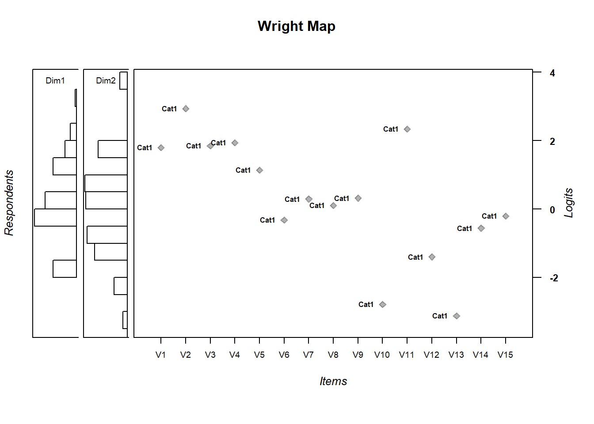

5.3 \(\theta\) and \(\delta\)
## Iteration in WLE/MLE estimation 1 | Maximal change 2.105
## Iteration in WLE/MLE estimation 2 | Maximal change 0.7201
## Iteration in WLE/MLE estimation 3 | Maximal change 0.0844
## Iteration in WLE/MLE estimation 4 | Maximal change 0.0235
## Iteration in WLE/MLE estimation 5 | Maximal change 0.0077
## Iteration in WLE/MLE estimation 6 | Maximal change 0.0026
## Iteration in WLE/MLE estimation 7 | Maximal change 9e-04
## Iteration in WLE/MLE estimation 8 | Maximal change 3e-04
## Iteration in WLE/MLE estimation 9 | Maximal change 1e-04
##
## -------
## WLE Reliability (Dimension1)=0.185
## WLE Reliability (Dimension2)=0.492## Item fit calculation based on 15 simulations
## |**********|
## |----------|## parameter Outfit Outfit_t Outfit_p Outfit_pholm Infit Infit_t Infit_p Infit_pholm
## 1 V1 0.6351429 -8.2600916 1.455607e-16 2.037850e-15 0.8245462 -3.655234259 0.0002569472 0.003854209
## 2 V2 3.4309273 15.9493993 2.876502e-57 4.314753e-56 1.2286413 2.264413319 0.0235487055 0.329681878
## 3 V3 1.0091242 0.1647776 8.691190e-01 1.000000e+00 1.0292895 0.566547369 0.5710217418 1.000000000
## 4 V4 0.9597918 -0.7349765 4.623538e-01 1.000000e+00 0.9714647 -0.506302334 0.6126444246 1.000000000
## 5 V5 1.0536510 1.4477018 1.477005e-01 1.000000e+00 1.0291107 0.799698423 0.4238855469 1.000000000
## 6 V6 0.9896958 -0.3881592 6.978983e-01 1.000000e+00 0.9975659 -0.086613778 0.9309785142 1.000000000
## 7 V7 0.9456893 -2.0717075 3.829273e-02 4.978055e-01 0.9653411 -1.307955531 0.1908883926 1.000000000
## 8 V8 0.9615285 -1.4767079 1.397539e-01 1.000000e+00 0.9710983 -1.102455829 0.2702635515 1.000000000
## 9 V9 0.9683759 -1.1827064 2.369255e-01 1.000000e+00 0.9766713 -0.863440028 0.3878955797 1.000000000
## 10 V10 1.0350439 0.4097514 6.819883e-01 1.000000e+00 1.0140731 0.186299250 0.8522100955 1.000000000
## 11 V11 0.9587239 -0.6135188 5.395334e-01 1.000000e+00 0.9983530 -0.003808739 0.9969610729 1.000000000
## 12 V12 1.0282739 0.6827282 4.947786e-01 1.000000e+00 1.0127023 0.315235152 0.7525831178 1.000000000
## 13 V13 0.8546820 -1.4357873 1.510629e-01 1.000000e+00 1.0142928 0.167427207 0.8670339190 1.000000000
## 14 V14 0.9848718 -0.5345304 5.929746e-01 1.000000e+00 0.9862989 -0.478330402 0.6324150611 1.000000000
## 15 V15 0.9957944 -0.1659380 8.682057e-01 1.000000e+00 0.9838037 -0.613441731 0.5395842997 1.000000000## Dim1 Dim2
## 0.6738227 0.68149345.3.1 Wright Map
MDthetas.multi <-
cbind(persons.multi$theta.Dim01,persons.multi$theta.Dim02) #one line
wrightMap(MDthetas.multi, thresholds.multi) #second line
## Cat1
## V1 1.7928772
## V2 2.9363708
## V3 1.8478088
## V4 1.9375305
## V5 1.1390076
## V6 -0.3249207
## V7 0.2915955
## V8 0.1009827
## V9 0.3188782
## V10 -2.7882385
## V11 2.3348694
## V12 -1.3975525
## V13 -3.1209412
## V14 -0.5602112
## V15 -0.2038879Compare the first unidimensional model to the multidimensional one
## 'log Lik.' -7343.562 (df=16)## 'log Lik.' -7334.79 (df=18)## Model loglike Deviance Npars AIC BIC Chisq df p
## 1 mod1 -7343.562 14687.12 16 14719.12 14797.65 17.54463 2 0.00015
## 2 multi -7334.790 14669.58 18 14705.58 14793.92 NA NA NAAlternatively, you can use IRT.compareModels
## $IC
## Model loglike Deviance Npars Nobs AIC BIC AIC3 AICc CAIC
## 1 mod1 -7343.562 14687.12 16 1000 14719.12 14797.65 14735.12 14719.68 14813.65
## 2 multi -7334.790 14669.58 18 1000 14705.58 14793.92 14723.58 14706.28 14811.92
##
## $LRtest
## Model1 Model2 Chi2 df p
## 1 mod1 multi 17.54463 2 0.0001549648
##
## attr(,"class")
## [1] "IRT.compareModels"## Absolute and relative model fit
##
## Model loglike Deviance Npars Nobs AIC BIC AIC3 AICc CAIC
## 1 mod1 -7343.562 14687.12 16 1000 14719.12 14797.65 14735.12 14719.68 14813.65
## 2 multi -7334.790 14669.58 18 1000 14705.58 14793.92 14723.58 14706.28 14811.92
##
## Likelihood ratio tests - model comparison
##
## Model1 Model2 Chi2 df p
## 1 mod1 multi 17.5446 2 2e-04We see that model multi fits slightly better. However, the log likelihood difference test shows the difference is statististically significant.
| Model1 | Model2 | Chi2 | df | p |
|---|---|---|---|---|
| mod1 | multi | 17.54463 | 2 | 0.000155 |
compare$LRtest